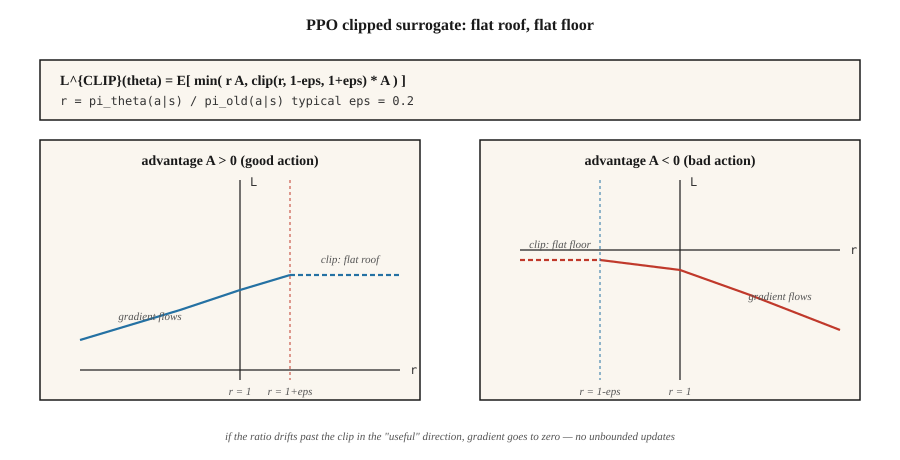

Proximal Policy Optimization (PPO)
A2C throws away each rollout after one update. PPO wraps the policy gradient in a clipped importance ratio so you can do 10+ epochs on the same data without the policy exploding. Schulman et al. (2017). Still the default policy-gradient algorithm in 2026.
- Type
- Build
- Languages
- Python
- Prerequisites
- Phase 9 · 06 (REINFORCE), Phase 9 · 07 (Actor-Critic)
- Time
- ~75 minutes
#The Problem
A2C (Lesson 07) is on-policy: the gradient E_{π_θ}[A · ∇ log π_θ] requires data sampled from the current π_θ. Take one update, and π_θ changes; the data you used is now off-policy. Re-use it and your gradient is biased.
Rollouts are expensive. On Atari, one rollout across 8 envs × 128 steps = 1024 transitions and a dozen seconds of environment time. Throwing that away after one gradient step is wasteful.
Trust Region Policy Optimization (TRPO, Schulman 2015) was the first fix: constrain each update so the KL divergence between old and new policy stays below δ. Theoretically clean, but requires a conjugate-gradient solve per update. Nobody runs TRPO in 2026.
PPO (Schulman et al. 2017) replaces the hard trust-region constraint with a simple clipped objective. One extra line of code. Ten epochs per rollout. No conjugate gradients. Good-enough theoretical guarantees. Nine years later it is still the default policy-gradient algorithm for everything from MuJoCo to RLHF.
#The Concept

The importance ratio.
r_t(θ) = π_θ(a_t | s_t) / π_{θ_old}(a_t | s_t)
This is the likelihood ratio of the new policy vs the policy that collected the data. r_t = 1 means no change. r_t = 2 means the new policy is twice as likely to take a_t as the old.
The clipped surrogate.
L^{CLIP}(θ) = E_t [ min( r_t(θ) A_t, clip(r_t(θ), 1-ε, 1+ε) A_t ) ]
Two terms:
- If the advantage
A_t > 0and the ratio tries to grow past1 + ε, the clip flattens the gradient — don't push a good action further than+εabove old probability. - If the advantage
A_t < 0and the ratio tries to grow past1 - ε(meaning we would make a bad action more likely compared to its clipped reduction), the clip caps the gradient — don't push a bad action below-ε.
The min handles the other direction: if the ratio has moved in the beneficial direction, you still get the gradient (no clipping on the side that would hurt you).
Typical ε = 0.2. Plot the objective as a function of r_t: a piecewise-linear function with a flat roof on the "good side" and a flat floor on the "bad side."
The full PPO loss.
L(θ, φ) = L^{CLIP}(θ) - c_v · (V_φ(s_t) - V_t^{target})² + c_e · H(π_θ(·|s_t))
Same actor-critic structure as A2C. Three coefficients, usually c_v = 0.5, c_e = 0.01, ε = 0.2.
The training loop.
- Collect
N × Ttransitions acrossNparallel envs forTsteps each. - Compute advantages (GAE), freeze them as constants.
- Freeze
π_{θ_old}as a snapshot of currentπ_θ. - For
Kepochs, for each minibatch of(s, a, A, V_target, log π_old(a|s)):- Compute
r_t(θ) = exp(log π_θ(a|s) - log π_old(a|s)). - Apply
L^{CLIP}+ value loss + entropy. - Gradient step.
- Compute
- Discard the rollout. Return to step 1.
K = 10 and minibatches of 64 is a standard hyperparameter set. PPO is robust: the exact numbers rarely matter within ±50%.
KL-penalty variant. The original paper proposed an alternative using an adaptive KL penalty: L = L^{PG} - β · KL(π_θ || π_old) with β adjusted based on observed KL. The clipping version became dominant; the KL variant survives in RLHF (where KL to the reference policy is a separate constraint you always want anyway).
#Build It
#Step 1: capture log π_old(a | s) at rollout time
for step in range(T):
probs = softmax(logits(theta, state_features(s)))
a = sample(probs, rng)
s_next, r, done = env.step(s, a)
buffer.append({
"s": s, "a": a, "r": r, "done": done,
"v_old": value(w, state_features(s)),
"log_pi_old": log(probs[a] + 1e-12),
})
s = s_nextThe snapshot is taken once, at rollout time. It does not change during the update epochs.
#Step 2: compute GAE advantages (Lesson 07)
Same as A2C. Normalize across the batch.
#Step 3: clipped surrogate update
for _ in range(K_EPOCHS):
for mb in minibatches(buffer, size=64):
for rec in mb:
x = state_features(rec["s"])
probs = softmax(logits(theta, x))
logp = log(probs[rec["a"]] + 1e-12)
ratio = exp(logp - rec["log_pi_old"])
adv = rec["advantage"]
surrogate = min(
ratio * adv,
clamp(ratio, 1 - EPS, 1 + EPS) * adv,
)
# backprop -surrogate, add value loss, subtract entropy
grad_logpi = onehot(rec["a"]) - probs
if (adv > 0 and ratio >= 1 + EPS) or (adv < 0 and ratio <= 1 - EPS):
pg_grad = 0.0 # clipped
else:
pg_grad = ratio * adv
for i in range(N_ACTIONS):
for j in range(N_FEAT):
theta[i][j] += LR * pg_grad * grad_logpi[i] * x[j]The "clipped → zero gradient" pattern is the heart of PPO. If the new policy has already drifted too far in the beneficial direction, the update stops.
#Step 4: value and entropy
Add standard MSE to the critic target and an entropy bonus on the actor, same as A2C.
#Step 5: diagnostics
Three things to watch every update:
- Mean KL
E[log π_old - log π_θ]. Should stay in[0, 0.02]. If it blows past0.1, reduceK_EPOCHSorLR. - Clip fraction — the fraction of samples whose ratio lies outside
[1-ε, 1+ε]. Should be~0.1-0.3. If~0, the clip never triggers → raiseLRorK_EPOCHS. If~0.5+, you are over-fitting the rollout → lower them. - Explained variance
1 - Var(V_target - V_pred) / Var(V_target). Critic quality metric. Should climb toward 1 as the critic learns.
#Pitfalls
- Clip coefficient mistuned.
ε = 0.2is the de-facto standard. Going to0.1makes updates too timid;0.3+invites instability. - Too many epochs.
K > 20routinely destabilizes because the policy drifts far fromπ_old. Cap epochs, especially for large networks. - No reward normalization. Large reward scales eat into the clip range. Normalize rewards (running std) before computing advantages.
- Forgetting advantage normalization. Per-batch zero-mean/unit-std normalization is standard. Skipping it wrecks PPO on most benchmarks.
- Learning rate not decayed. PPO benefits from linear LR decay to zero. Constant LR is often worse.
- Importance ratio math errors. Always
exp(log_new - log_old)for numerical stability, notnew / old. - Wrong gradient sign. Maximize the surrogate = minimize
-L^{CLIP}. A flipped sign is the most common PPO bug.
#Use It
PPO is 2026's default RL algorithm across a surprising number of domains:
| Use case | PPO variant |
|---|---|
| MuJoCo / robotics control | PPO with Gaussian policy, GAE(0.95) |
| Atari / discrete games | PPO with categorical policy, rolling 128-step rollouts |
| RLHF for LLMs | PPO with KL penalty to reference model, reward from RM at end of response |
| Large-scale game agents | IMPALA + PPO (AlphaStar, OpenAI Five) |
| Reasoning LLMs | GRPO (Lesson 12) — PPO variant without critic |
| Preference-only data | DPO — closed-form collapsing of PPO+KL, no online sampling |
The PPO loss shape — clipped surrogate + value + entropy — is the scaffolding for DPO, GRPO, and nearly every RLHF pipeline.
#Ship It
Save as outputs/skill-ppo-trainer.md:
---
name: ppo-trainer
description: Produce a PPO training config and a diagnostic plan for a given environment.
version: 1.0.0
phase: 9
lesson: 8
tags: [rl, ppo, policy-gradient]
---
Given an environment and training budget, output:
1. Rollout size. `N` envs × `T` steps.
2. Update schedule. `K` epochs, minibatch size, LR schedule.
3. Surrogate params. `ε` (clip), `c_v`, `c_e`, advantage normalization on.
4. Advantage. GAE(`λ`) with explicit `γ` and `λ`.
5. Diagnostics plan. KL, clip fraction, explained variance thresholds with alerts.
Refuse `K > 30` or `ε > 0.3` (unsafe trust region). Refuse any PPO run without advantage normalization or KL/clip monitoring. Flag clip fraction sustained above 0.4 as drift.#Exercises
- Easy. Run PPO on 4×4 GridWorld with
ε=0.2, K=4. Compare sample efficiency to A2C (one epoch per rollout) at matched env steps. - Medium. Sweep
K ∈ {1, 4, 10, 30}. Plot return vs env steps and track mean KL per update. At whatKdoes KL explode on this task? - Hard. Replace the clipped surrogate with an adaptive KL penalty (
βdoubled ifKL > 2·target, halved ifKL < target/2). Compare final return, stability, and clip-free-ness.
#Key Terms
| Term | What people say | What it actually means |
|---|---|---|
| Importance ratio | "r_t(θ)" | π_θ(a|s) / π_old(a|s); deviation from the policy that collected the data. |
| Clipped surrogate | "PPO's main trick" | min(r·A, clip(r, 1-ε, 1+ε)·A); flat gradient past the clip on beneficial side. |
| Trust region | "TRPO / PPO intent" | Limit each update's KL to guarantee monotone improvement. |
| KL penalty | "Soft trust region" | Alternative PPO: L - β · KL(π_θ || π_old). Adaptive β. |
| Clip fraction | "How often clipping triggers" | Diagnostic — should be 0.1-0.3; outside means mistuned. |
| Multi-epoch training | "Data reuse" | K epochs on each rollout; variance cost traded for sample efficiency. |
| On-policy-ish | "Mostly on-policy" | PPO is nominally on-policy but K>1 epochs uses slightly-off-policy data safely. |
| PPO-KL | "The other PPO" | KL-penalty variant; used in RLHF where KL-to-reference is already a constraint. |
#Further Reading
- Schulman et al. (2017). Proximal Policy Optimization Algorithms — the paper.
- Schulman et al. (2015). Trust Region Policy Optimization — TRPO, PPO's predecessor.
- Andrychowicz et al. (2021). What Matters In On-Policy RL? A Large-Scale Empirical Study — every PPO hyperparameter ablated.
- Ouyang et al. (2022). Training language models to follow instructions with human feedback — InstructGPT; the PPO-in-RLHF recipe.
- OpenAI Spinning Up — PPO — clean modern exposition with PyTorch.
- CleanRL PPO implementation — reference single-file PPO used by many papers.
- Hugging Face TRL — PPOTrainer — the production recipe for PPO on language models; read alongside Lesson 09 (RLHF).
- Engstrom et al. (2020). Implementation Matters in Deep Policy Gradients — the "37 code-level optimizations" paper; which PPO tricks are load-bearing and which are folklore.
Nice. That's 3 minutes of Reinforcement Learning behind you.
Continue to Reward Modeling & RLHF →